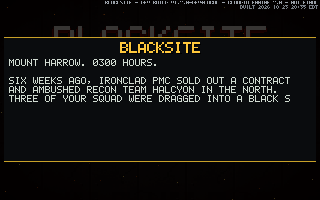

Blacksite
A fast, retro first-person shooter — every texture, sound and song generated by its own code.
This site keeps three things separate, on purpose: the game today (verified), what is being built (active work), and the long-term intent (not inventory).
About
Rook Vance, ex-sergeant of recon team HALCYON, goes back into Ironclad PMC's Mount Harrow black site to rescue his squad and expose Commander Kessler's illegal weapons tests. Blacksite is a from-scratch C11 + SDL2 shooter on its own Halcyon Engine 3.0 — a threaded software renderer in the Wolfenstein tradition, heavily modernized. Nothing in the game is a loaded asset file: every texture, model, font glyph, sound effect and music loop is generated procedurally by the code itself.
The game today — verified (version 1.5.0)
- 11 levels, each with a scripted set piece — data wipe, containment breach, cave-in, reactor scram, blackouts, and Kessler's open-air arena
- Carnage Mode (endless escalating waves, runs save and load), Daily Carnage (one date-seeded run per day), New Game+ with gold guns, time trials against your own ghost, and a photo mode
- A style meter from D to SSS, quick melee that heals on kills, dodge with invincibility frames, and a slide with i-frames
- An arsenal including the FROSTBITE cryo projector, SHREDDER spin-up minigun and STORM LANCE chain lightning; six weapon mods; OVERCLOCK pickups
- Enemies that telegraph and think: cover-seeking, flanking, grenades to flush you out — plus the shimmer-cloaked SPECTRE, the pickup-disguised MIMIC, and the kamikaze SAPPER
- 32 achievements, lifetime records, elites and per-level bounties, full mouse menus, gamepad support, rebindable controls, accessibility options
- An in-game level editor — all 11 levels were overhauled in it

What is being built
Right now: the project's infrastructure, not new gameplay. On 2026-11-01 Blacksite became a first-class studio repository — its full local history was transferred to GitHub intact, continuous testing was stood up green on the first run, and this website was established. The 1.5.0 release decision itself remains the owner's, unscheduled.
The long-term intent
Intent, not inventory: the project's own records name a second episode — the Ironclad board — as the largest unbuilt piece of the game. Whether and when it is built is a future decision for the project owner; nothing about it is promised or scheduled here.